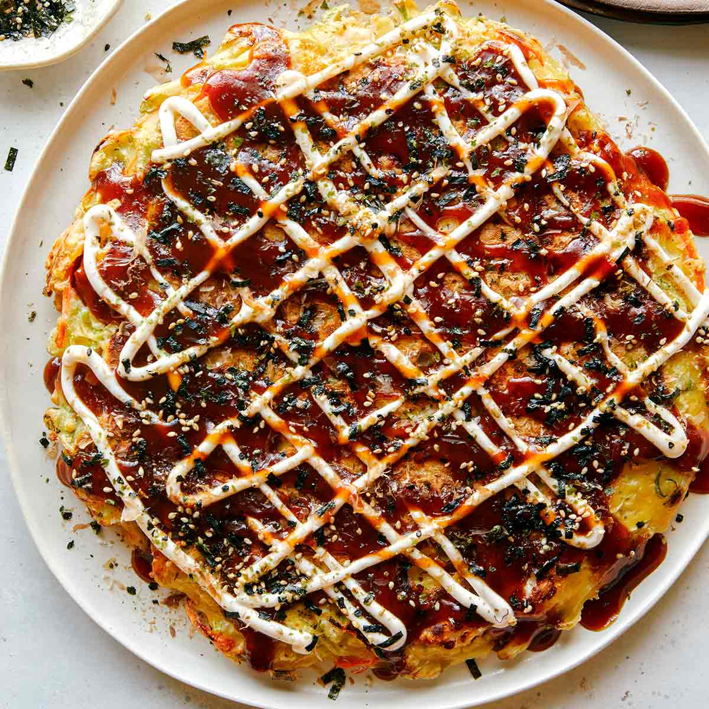
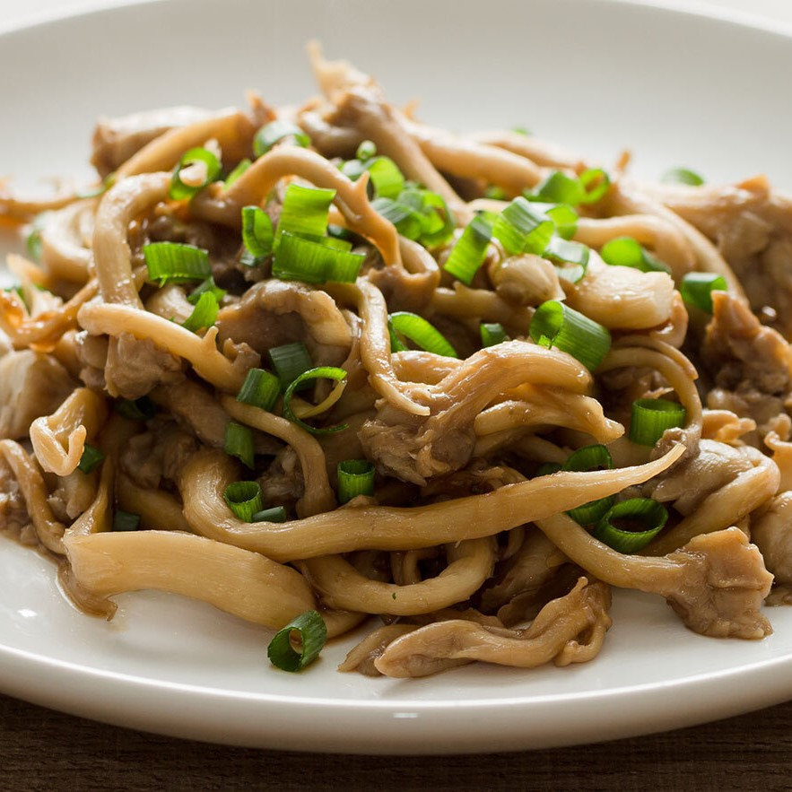

Comida Japonesa
A culinária japonesa se desenvolveu ao longo dos séculos como um resultado de muitas mudanças políticas e sociais no Japão. A culinária eventualmente passou por um processo de evolução com o advento da Idade Média, que marcou o início da expansão do elitismo com a era do domínio Xogum
Okonomiyaki

Okonomiyaki é um prato japonês de teppanyaki, uma panqueca salgada feita de polme de farinha de trigo e outros ingredientes cozidos em um teppan. Adições comuns incluem repolho, carne e frutos-do-mar, e as coberturas incluem molho okonomiyaki, aonori, katsuobushi, maionese japonesa e gengibre em conserva.
Shimeji

Shimeji é um tipo de cogumelo que apresenta grandes benefícios e possui bons nutrientes para o organismo. São ricos em proteínas, fibras, minerais e vitaminas e apresentam baixo teor de gordura total.
Ele pode ser comprado em mercados tradicionais, em conserva ou seco. É utilizado em muitos pratos como carnes, molhos para massas, saladas, recheios, e também é tradicional da culinária japonesa.